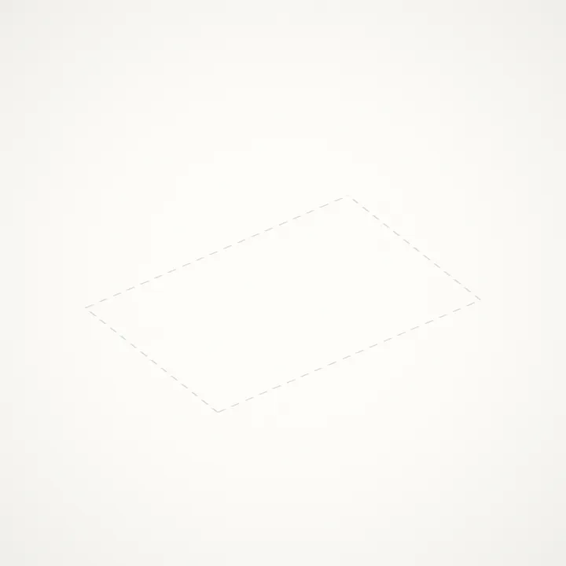
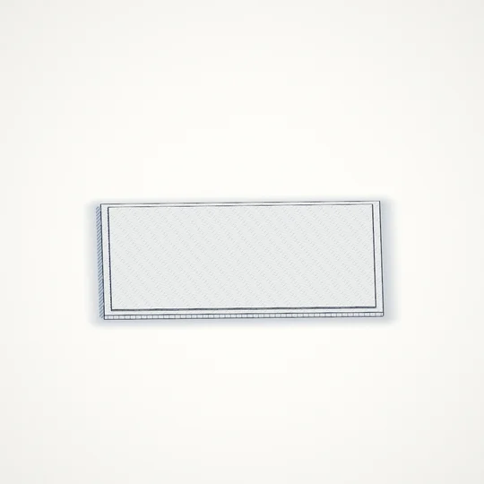
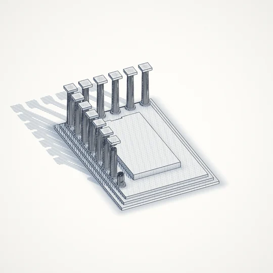
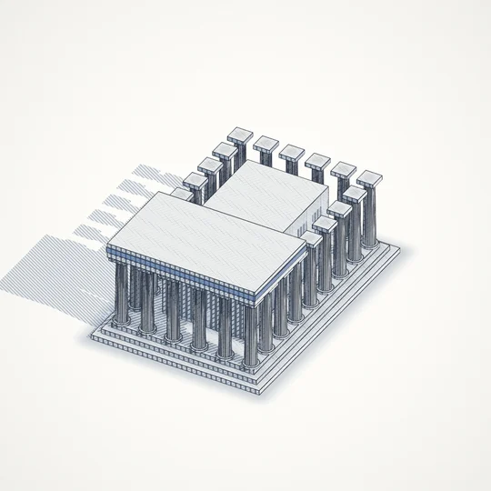
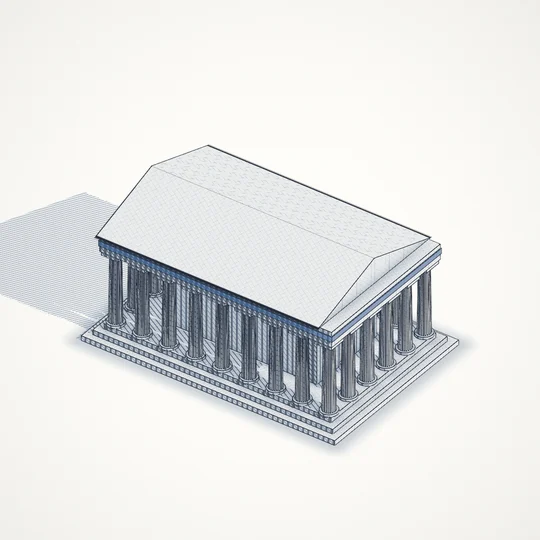

Living Diary · journal
An Acropolis of Words
I talk, and a temple goes up. A step, then a column, then a roof. It is the most honest picture I have found of what it means to build a life one day at a time.
I talk, and a temple goes up. A step, then a column, then a roof. It is the most honest picture I have found of what it means to build a life one day at a time.

Honestly, life feels great right now. The craziest part is realizing that I'm actually here, living it. I'm sitting here doing my thing, keeping myself motivated and moving every single day, and I am more than grateful for that. Life is something we take for granted so easily. I think I've been doing that.
The hard part is the growing pains. There's a lot I haven't been able to put fully into perspective yet. I'm 22. I'm almost four months into my first full-time job. I'm trying to stay fit, build a new community, not make the mistakes I made in the past, and do everything for the better. I'm keeping God close.
I'm also learning what it means to move like a man. Being a man isn't aggression. A man doesn't always move with beef and malice. Sometimes a man leads with kindness. I want to focus on how I lead: how I can show love and still be someone people respect.
Respect is earned, and respect is given. Who am I to withhold it and still expect it back?
At the same time, you have to move with awareness of how people see you. You don't want to be taken for something you're not. So I stand on business. I let people know I know my worth, I know who I am, and nothing is going to stop me.
Building this app has helped me get there. It keeps me visually engaged while I talk, and it shows me that my words mean something. As the structures form, as each piece of artwork comes together, I can see that I'm building an empire with my own words. I'm building an empire with my life, day by day.
Journaling has become so much easier. Understanding who I am has become easier. Talking my feelings out, and putting them into words for myself, has become easier. The more it builds, the more I want to talk and the more I want to see what comes next. That's true of my life too. The further I go, the more I want to keep going.
This app has changed my life in a way I can't fully explain, and it's going to keep doing that. Now I want it to change other people's lives too.
Living Diary is made for getting things off your chest. Talk or type. Say the same thing a hundred times if that's what it takes for it to get lighter. In your best times and your worst, what you say becomes something beautiful, and you get to watch it happen.
A place like that only works if it's actually safe, so it's built to be:
In the Acropolis world, each temple takes a few hundred words. The steps are laid first. Columns go up one by one around the edge, an inner room rises inside them, a blue frieze is set across the top, and the roof goes on last, back to front. Then the next temple begins a little further down the road. The finished ones stay, fading into the distance but never gone.
Nothing here is a template or a generated image. The temple is worked out from the number of words you've said, and drawn fresh every frame like an architect's pen drawing. If you delete, it comes back down.

The steps · the first words
The columns · one at a time
The roof · laid back to front
Finished · the next beginsI want people to come here and talk, and to see their life turn into something beautiful and real. I want you to see that there is worth in what you say. None of it will be taken for granted.
The community I'm building around this has been monumental to me. I'm going to keep sharing photos and publishing these articles, and I hope you read them, try it, and take part. Without further ado: come build something.
Living Diary · Acropolis world · drawn live in WGSL from the word count · spoken, then lightly edited for reading